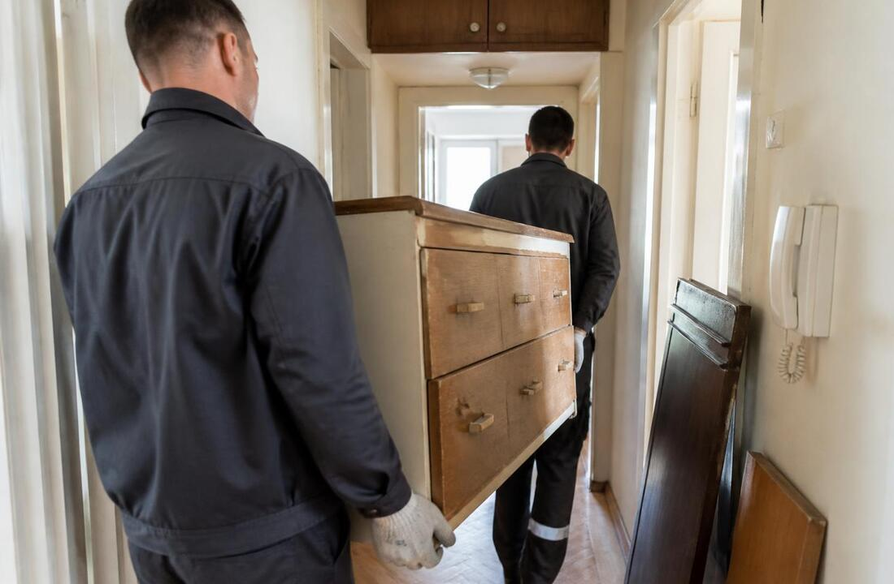
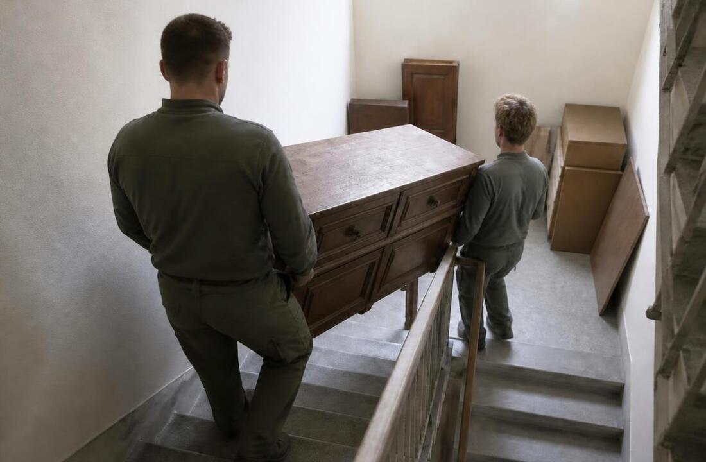
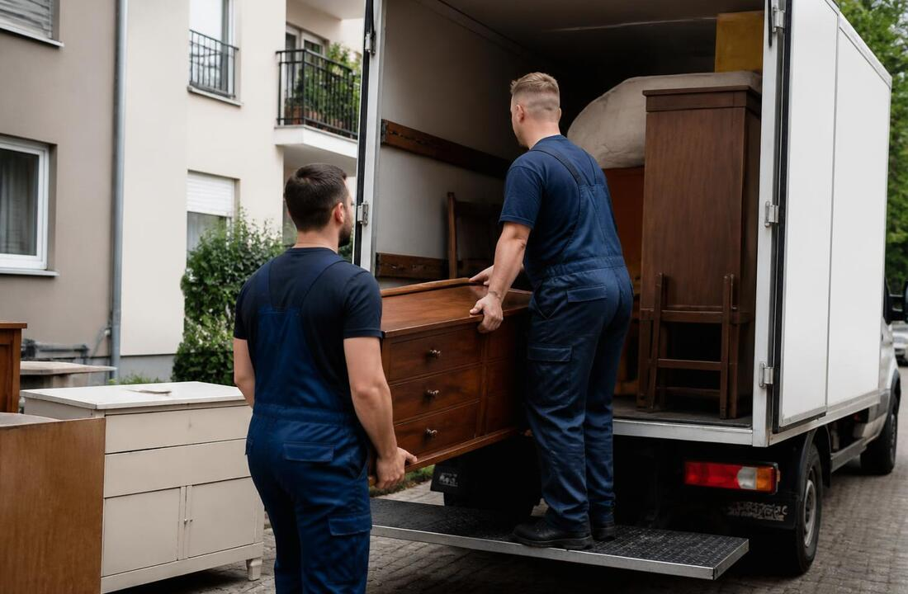

-A1 SELIDBE BEOGRAD-
ODNOŠENJE STAROG NAMEŠTAJA
KAKO LAKO I BRZO OSLOBODITI SVOJ PROSTOR UZ A1 SELIDBE
Želite da se brzo i bez fizičkog napora oslobodite nepotrebnih stvari? Agencija A1 Selidbe Beograd nudi profesionalno odnošenje starog nameštaja i kabastog otpada. Naš tim preuzima kompletan posao – od demontaže i iznošenja sa bilo kog sprata, do utovara i po potrebi ekološkog odlaganja na ovlašćenu deponiju.
Približićemo vam sve što treba da znate o profesionalnim uslugama iznošenja i odvoza nameštaja, cenama, zaštiti prostora prilikom iznošenja, kao i savete za izbor pouzdane firme. Pročitajte kako da vaše osvežavanje doma ili poslovnog prostora protekne bez komplikacija.
Ključne tačke
- Odnošenje starog nameštaja štedi vreme, trud i obezbeđuje ekološki odgovorno odlaganje.
- Profesionalne firme kao što je A1 Selidbe Beograd nude kompletnu uslugu iznošenja i odvoza uz zaštitu prostora.
- Cena zavisi od količine, vrste nameštaja i pristupa, ali se može precizno proceniti unapred.
- Izbor pouzdane firme olakšava ceo proces i sprečava neprijatna iznenađenja.

ZAŠTO JE PROFESIONALNO ODNOŠENJE STAROG NAMEŠTAJA PRAVI IZBOR
Angažovanje profesionalaca za odnošenje starog nameštaja donosi brojne prednosti koje značajno olakšavaju proces oslobađanja prostora u vašem domu ili kancelariji. Umesto da sami rizikujete povrede ili oštećenja zidova i podova, naš stručni tim preuzima kompletnu odgovornost za iznošenje i odvoz starog nameštaja, koristeći odgovarajuću opremu i tehnike nošenja. Ovo je posebno važno kod masivnih komada, kao što su ormari ili garniture, koje je teško i nepraktično iznositi bez iskustva.
Ušteda vremena i energije je možda i najvažniji razlog zašto se sve više ljudi odlučuje za profesionalne usluge. Umesto višesatnog rastavljanja, nošenja, organizacije prevoza nameštaja i čekanja na deponijama, klijentima je dovoljno da zakažu termin i sve ostalo prepuste našoj ekipi. Nema potrebe za iznajmljivanjem vozila, okupljanjem prijatelja ili članova porodice, niti za fizičkim naporom i gubljenjem celog dana.
Još jedna značajna prednost jeste ekološki odgovorno odlaganje starog nameštaja. Profesionalne agencije za selidbe sarađuju sa reciklažnim centrima i ovlašćenim deponijama, što znači da se stari predmeti ne odlažu nepropisno, već se materijali pravilno zbrinjavaju ili recikliraju. Na taj način, klijenti doprinose zaštiti životne sredine i smanjenju otpada na nelegalnim lokacijama.
- Sigurnost i zaštita prostora – nema brige o ogrebotinama, oštećenjima ili prljanju prilikom iznošenja nameštaja.
- Brza i efikasna realizacija – čitav proces može biti završen za manje od jednog dana.
- Legalno i bezbedno zbrinjavanje otpada – uz odlaganje na ovlašćenoj deponiji.
Ukoliko želite pouzdano i ekološki odgovorno rešenje, naša usluga za odvoz stvari na deponiju predstavlja jednostavan način da se rešite svih nepotrebnih komada bez stresa i komplikacija.
KAKO FUNKCIONIŠE USLUGA ODNOŠENJA STAROG NAMEŠTAJA U BEOGRADU
Usluga odnošenja starog nameštaja u Beogradu osmišljena je tako da maksimalno olakša korisnicima ceo proces, od naručivanja do završnog odvoza. Prvi korak je kontaktiranje naše firme putem telefona, mejla ili online formulara, gde se dogovaraju detalji — vrsta nameštaja, količina, spratnost objekta i željeni termin. Omogućavamo zakazivanje u roku od 24-48 sati, a često je moguće dogovoriti i hitne intervencije istog dana.
Standardna usluga obuhvata:
- Dolazak ekipe na adresu u Beogradu
- Iznošenje i odvoz nameštaja iz stana, kuće ili poslovnog prostora
- Utovar i transport do deponije, reciklažnog centra ili na dogovorenu lokaciju
- Zaštita prostora tokom iznošenja (upotreba zaštitnih folija ili ćebadi)
- Po potrebi demontaža nameštaja radi lakšeg iznošenja
Kada angažujete profesionalce, sve ove korake ne morate sami da organizujete ni izvodite, što je posebno važno u višespratnicama ili zgradama bez lifta. Takođe, A1 Selidbe nude i uslugu za najam radnika za selidbe i teške terete ukoliko je potrebno izneti teži ili veći broj elemenata u kraćem roku.
Mogućnosti prilagođavanja usluge
Usluga odnošenja starog nameštaja se često prilagođava specifičnim potrebama klijenata:
- Mogućnost odabira tačnog termina iznošenja (pre ili posle radnog vremena, vikendom)
- Odabir destinacije — odvoz na deponiju, donacija ili transport u skladište
- Posebna obrada za IT, kancelarijske ili specijalne predmete
- Organizacija dodatnih usluga, kao što je čišćenje prostora nakon iznošenja
Za veće količine otpada ili kada je potrebno izbaciti i druge vrste nepotrebnih stvari, možete koristiti i našu primarnu uslugu za odvoženje stvari na deponiju, čime se rešavate svih suvišnih predmeta u jednom danu.

ODVOZ STAROG NAMEŠTAJA – ŠTA SE SVE MOŽE IZNETI I ODNETI
Kada se odlučite za odvoz starih stvari, važno je znati šta sve može biti predmet iznošenja i odnošenja. Naša profesionalna služba za odnošenje starog nameštaja u Beogradu prihvata širok spektar predmeta, od pojedinačnih komada do kompletnih garnitura i pražnjenja celih objekata što je čest slučaj prilikom selidbe firmi i kancearija.
Vrste nameštaja koje je moguće izneti i odneti
- Kauči, sofe i fotelje (bez obzira na veličinu i stanje)
- Ormani, plakari, komode, ladičari
- Kreveti (sa ili bez dušeka), ležajevi, madraci
- Stolovi, stolice, radni i trpezarijski setovi
- Police, regali, vitrine
- Kuhinjski elementi i aparati
- Baštenski nameštaj, stare police iz podruma ili garaža
Osim standardnog nameštaja, moguće je izneti i kabasti otpad, poput starih vrata, prozora, teških komada iz podruma, oštećene kućne aparate ili selidbe specijalnog tereta. Usluge se često odnose i na iznošenje predmeta iz teško pristupačnih prostora — uskih hodnika, viših spratova bez lifta ili čak tavanskih i podrumskih prostorija.
Posebne situacije: kabasti otpad i teško pristupačna mesta
Ako imate kabaste ili izuzetno teške elemente, kao što su trosedi s mehanizmima, masivni ormari ili antikviteti, preporučuje se angažovanje iskusnog tima. Naši stručnjaci iz A1 Selidbi imaju adekvatnu opremu i znanje da obezbede transport nameštaja bez rizika po vaš prostor.
Iznositi nameštaj iz podruma, potkrovlja ili sa viših spratova bez lifta zahteva dodatnu pažnju. Važno je unapred obavestiti našu agenciju o ovakvim okolnostima kako bismo poneli potrebne alate ili obezbedili dodatnu radnu snagu.
Priprema nameštaja za odvoz – na šta obratiti pažnju
- Odvojite nepotreban nameštaj od onoga koji ostaje – olakšaćete rad ekipi
- Izvadite fioke, police i sve pokretne delove
- Izmerite širinu prolaza i vrata – proverite da li komad može da prođe
- Zaštitite podove i zidove, posebno kod kabastih komada
- Prethodno ispraznite ormane, fioke i kutije
- Obavestite komšije o mogućoj buci ili blokiranju hodnika/lifta
Ako niste sigurni šta se sve može izneti ili imate specifične zahteve, slobodno se konsultujte sa nama. Naša tim za odvoz stvari na deponiju nudi i dodatne usluge odvoza na reciklažu, što može biti posebno korisno kod većih čišćenja ili renoviranja.
IZNOŠENJE I ODVOZ NAMEŠTAJA – BEZBEDNOST I ZAŠTITA PROSTORA
Prilikom odnošenja starog nameštaja, bezbednost i zaštita vašeg prostora su apsolutni prioritet naše ekipe. Timovi zaduženi za rejon Beograda i prigradske opštine znaju da svaki stan, kuća ili poslovni prostor ima specifične zahteve prilikom iznošenja i odvoza nameštaja.
Zaštita prostora i zajedničkih prostorija
Pre početka iznošenja, naši stručnjaci pažljivo procenjuju prostor i identifikuju kritične tačke – uske hodnike, vrata, stepeništa i liftove. Zbog toga koristimo zaštitne folije, kartone i ćebad kako bismo prekrili podove, zidove i osetljive površine:
- Podovi: Po potrebi zaštićuju se PVC folijama ili specijalnim stazama protiv ogrebotina i udaraca.
- Zidovi i ivice: Postavljaju se kartonske zaštite ili gumene trake na uglovima i rubovima.
- Liftovi i stepeništa: Unutrašnjost lifta se oblaže zaštitnim panelima, a stepeništa dodatnim oblogama.
Profesionalna oprema i tehnike iznošenja
Iskusna ekipa koristi odgovarajuću opremu kako bi olakšala i ubrzala posao, ali i smanjila rizik od oštećenja:
- Specijalni kaiševi i kolica: Omogućavaju siguran transport i iznošenje teških i kabastih komada.
- Alati za demontažu: Kada je potrebno, nameštaj se rastavlja u delove radi lakšeg i bezbednijeg prenosa.
- Zaštitne rukavice i obuća: Pored zaštite osoblja, sprečavaju klizanje i slučajna ispadanja prilikom rukovanja.
Prevencija oštećenja i briga o imovini
Svaka faza iznošenja i odnošenja starog nameštaja prati se sa posebnom pažnjom. Obučavamo naše radnike da prepoznaju potencijalne rizike i brzo reaguju u slučaju nepredviđenih okolnosti. Primeri dobrih praksi uključuju:
- Pravilan raspored i redosled iznošenja, kako bi se sprečilo zagušenje hodnika i oštećenje drugih predmeta.
- Korišćenje dodatne zaštite na ulaznim i zajedničkim vratima zgrade.
- Redovna komunikacija sa klijentom o svakom koraku iznošenja.

CENA ODNOŠENJA STAROG NAMEŠTAJA – ŠTA UTIČE NA KONAČNU CENU
Cena odnošenja starog nameštaja zavisi od više faktora, a transparentnost u formiranju troškova je jedna od ključnih prednosti A1 Selidbi. Pre nego što se odlučite za uslugu, važno je razumeti šta sve utiče na konačnu cenu, kao i kako ostvariti mogućnost besplatne procene.
| Faktor | Uticaj na cenu |
|---|---|
| Količina nameštaja | Veća količina podiže cenu zbog potrebe za većim vozilom i više radnika. |
| Tip i težina nameštaja | Masivni ormari, ugaone garniture ili teški komadi zahtevaju više truda i često dodatnu opremu. |
| Spratnost i lift | Iznošenje iz viših spratova bez lifta značajno poskupljuje uslugu. |
| Pristup objektu | Težak pristup (uske stepenice, nema parkinga) može povećati trošak. |
| Lokacija u Beogradu | Izdvojene lokacije ili udaljeni delovi grada mogu imati dodatnu naplatu. |
A1 Selidbe nude opciju besplatne procene – bilo telefonom, putem Viber/WhatsApp slika ili dolaskom na lice mesta, kako biste dobili tačnu i transparentnu ponudu bez skrivenih troškova.
Dodatne usluge – šta ulazi u obračun?
- Demontaža nameštaja – ako je potrebno rastavljanje glomaznih komada radi lakšeg iznošenja.
- Zaštita prostora – po potrebi se obezbeđuje dodatna zaštita zidova, podova i lifta.
- Odvoz na specijalizovane deponije – osiguravamo ekološko zbrinjavanje ili reciklažu.
- Vikend ili hitne intervencije – fleksibilni termini prilagođeni vašem radnom vremenu.
Ukoliko uz odnošenje starog nameštaja želite i kompletnu uslugu čišćenja prostora, nudimo vam ugovaranje integrisane usluge iznošenja, transporta i ekološkog odlaganja, čime štedite vreme i novac.
Pre konačne odluke, tražite detaljnu ponudu sa jasno navedenim stavkama, kako biste znali šta tačno plaćate. Naši timovi na terenu ističu se transparentnošću i pružanjem svih informacija unapred.
KAKO IZABRATI POUZDANU FIRMU ZA ODNOŠENJE STAROG NAMEŠTAJA
Prilikom izbora firme za odnošenje starog nameštaja, važno je obratiti pažnju na nekoliko ključnih faktora koji mogu značajno uticati na vaše iskustvo i bezbednost vašeg prostora. Prvi korak je istraživanje iskustva firme i njihovih referenci. Preporučuje se da pročitate recenzije korisnika i proverite dostupnost firme u vašem delu grada.
Licenciranost i pouzdanost su sledeći kriterijumi na koje treba obratiti pažnju. Firma koja poštuje propise garantuje bezbednost kako vaših stvari, tako i prostora tokom iznošenja i odvoza nameštaja. Ovo je naročito važno ukoliko se radi o većim komadima ili specifičnim zahtevima za odvoz na gradsku deponiju.
Kako izbeći skrivene troškove i neprijatnosti
- Zatražite detaljnu procenu unapred – neka bude jasno šta je sve uključeno u uslugu.
- Proverite uslove za iznošenje sa viših spratova, demontažu i odvoženje na deponiju.
- Insistirajte na jasnim potvrdama dogovorenih uslova kako biste izbegli naknadna iznenađenja.
Pogledajte i naše zvanične preporuke i reference klijenata da biste stekli realan utisak o kvalitetu usluge i pouzdanosti agencije A1 Selidbe.
| Kriterijum | Zašto je važan | Kako proveriti? |
|---|---|---|
| Iskustvo i reference | Pokazuje pouzdanost i kvalitet prethodnih usluga | Online recenzije, preporuke, direktni kontakti |
| Licenciranost i osiguranje | Štiti vas i vašu imovinu u slučaju štete | Zatražiti uvid u dozvole i polise osiguranja |
| Transparentnost cene | Sprečava neprijatna iznenađenja | Detaljna ponuda i ugovor pre početka rada |
Zaključak
Oslobađanje prostora od starog nameštaja ne mora biti komplikovano niti stresno. Uz pomoć tima A1 Selidbi, možete brzo, bezbedno i bez fizičkog napora osvežiti svoj dom ili poslovni prostor. Pravi izbor pouzdane agencije garantuje efikasnost, zaštitu vaše imovine i potpunu transparentnost u pogledu troškova.
Ne dozvolite da vam nepotrebni elementi zauzimaju dragocen prostor. Kontaktirajte nas za odnošenje starog nameštaja već danas i napravite prvi korak ka uređenijem i funkcionalnijem okruženju!